Jump to: A · B · C · D · E · F · G · H · I · L · M · N · O · P · R · S · T · V · W
A
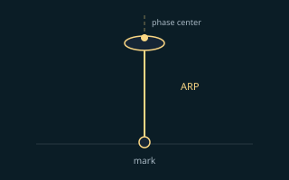
ARP (antenna reference point)
Manufacturer-defined point on a GNSS antenna used to measure height above a mark; not always the phase center.
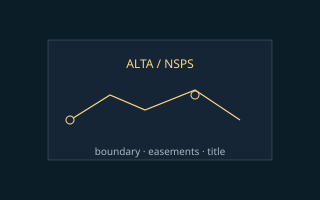
ALTA / NSPS
Widely used U.S. standards for land title surveys—often cited together for boundary and easement deliverables.
B
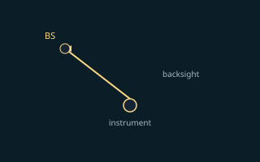
Backsight
Measurement to a known point behind the instrument used to orient a total station or theodolite setup.
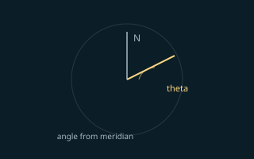
Bearing
Horizontal direction expressed as an angle from a reference meridian (true, grid, or magnetic).
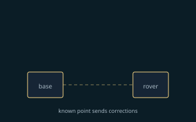
Base / rover
Base (or reference) receiver sits on a known point and computes corrections; rover is the moving receiver that applies them for RTK or logs data for PPK. Same roles underlie many network RTK services, where the “base” is virtualized. See GNSS & RTK.
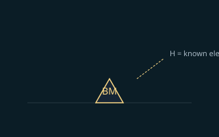
Benchmark
Survey mark with a published or accepted elevation used to tie vertical work to a datum.
C
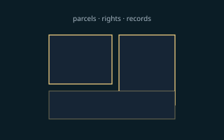
Cadastral
Relating to land parcels, boundaries, and rights—often tied to legal descriptions and public records.
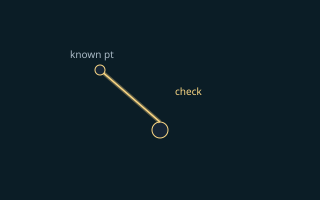
Check shot
Independent measurement to verify instrument setup, resection, or prior coordinates.
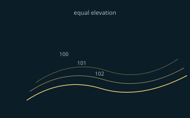
Contour
Line connecting points of equal elevation on a terrain or surface model.
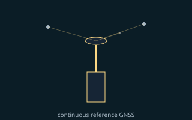
CORS
Continuously Operating Reference Station—permanent GNSS receivers that feed corrections into networks.
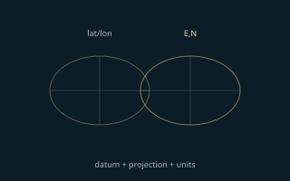
CRS
Coordinate reference system—the full recipe for coordinates: datum, map projection (if any), axis order, and units. EPSG codes often identify a CRS in software. Distinct from a datum alone; see reprojection.
D
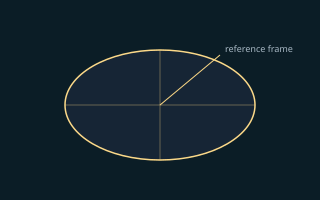
Datum
Reference frame defining coordinates—horizontal (ellipsoid), vertical (geoid or orthometric), or both.
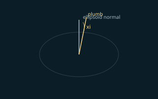
Deflection of the vertical
Angle between plumb line and ellipsoid normal; matters when converting between ellipsoid and orthometric heights.
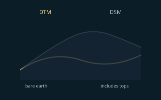
DTM / DSM
Digital terrain model (bare earth) vs digital surface model (includes vegetation, buildings, and other tops).
E
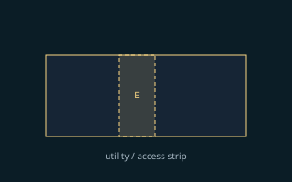
Easement
Legal right to use another’s land for a limited purpose (utilities, access, drainage).
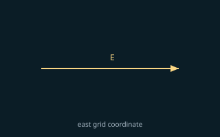
Easting
East coordinate in a projected grid—paired with northing (E, N) in many jobs.
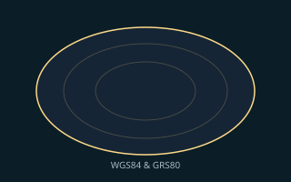
Ellipsoid
Smooth mathematical model of Earth’s shape (e.g., WGS84, GRS80) used for geodetic coordinates.
F
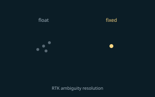
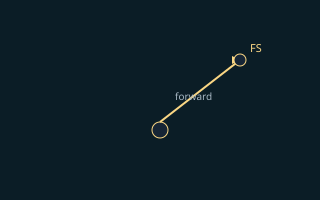
Foresight
Measurement toward a point ahead of the instrument along a traverse or layout line.
G
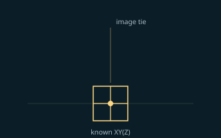
GCP
Ground control point—coordinates on the ground used to scale, rotate, or validate photogrammetry and mapping.
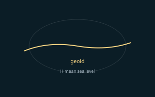
Geoid
Equipotential surface of Earth’s gravity field; approximates mean sea level for height systems.
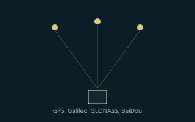
GNSS
Global Navigation Satellite System—satellite constellations (GPS, Galileo, GLONASS, BeiDou, etc.) whose signals receivers use to compute position and time. Standalone code positioning is typically meters; survey workflows add RTK, PPK, or network RTK for centimeter-level work. See GNSS & RTK overview.
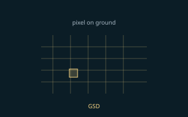
GSD
Ground sample distance—pixel size on the ground for imagery or orthomosaics.
H
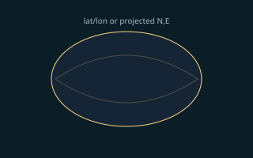
Horizontal datum
Reference for latitude/longitude or projected plane coordinates on an ellipsoid.
I
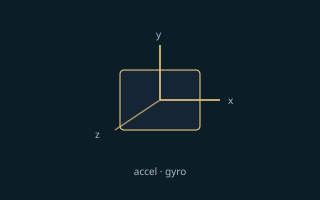
IMU
Inertial measurement unit—accelerometers and gyros that track motion; often fused with GNSS in mobile systems.
L
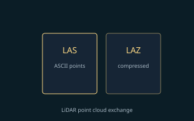
LAS / LAZ
Standard ASPRS formats for LiDAR point clouds: LAS is uncompressed binary; LAZ is compressed (smaller files; same points when decompressed).
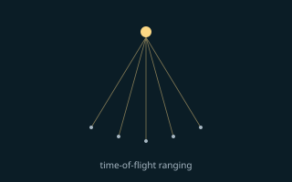
LiDAR
Light detection and ranging—laser pulses timed to build dense 3D point clouds.
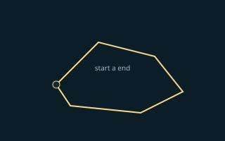
Loop closure
Constraint that forces a traverse or SLAM path to match known start/end geometry, reducing drift.
M
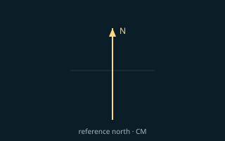
Meridian
Reference north direction; projections use a central meridian to limit distortion.
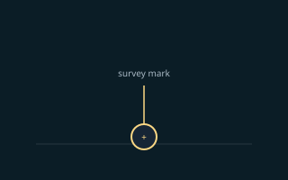
Monument
Physical survey mark—disk, pin, or chiseled cross—used for control or boundary corners.
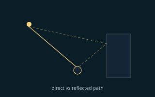
Multipath
GNSS signal reflections that delay or distort range measurements—common near buildings and metal.
N
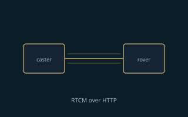
Network RTK
Network real-time kinematic—RTK corrections from a service built on many permanent reference stations (CORS-style networks), often delivered as a virtual reference (e.g., VRS) over NTRIP instead of setting up your own base. Reduces field setup when coverage and datum match your job; verify subscription, latency, and multipath. See PPK vs RTK & networks.
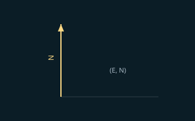
Northing
North coordinate in a projected grid, often paired with easting.
NTRIP
Networked transport of RTCM via Internet protocol—common way to stream RTK corrections (including network RTK services).
O
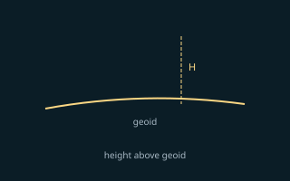
Orthometric height
Height above the geoid—what people often mean by “elevation above sea level” in the field.
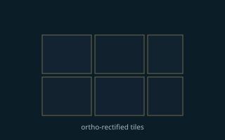
Orthomosaic
Georeferenced aerial image mosaic corrected for terrain relief and camera tilt.
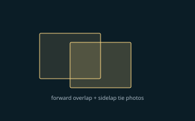
Overlap
Shared coverage between consecutive photos (forward overlap) and adjacent flight lines (sidelap). Enough overlap lets SfM tie images and control GSD quality; see photogrammetry.
P
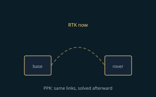
PPK
Post-processed kinematic—raw GNSS observations from rover (or drone) are corrected in software after the survey using data from a base or network. Same differential idea as RTK, but no live link is required; useful when links drop, for many drone workflows, and when you can accept office processing time. See PPK vs RTK & networks.
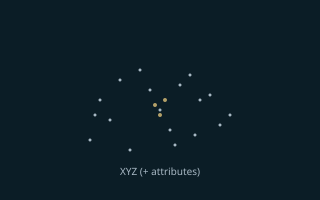
Point cloud
Large set of XYZ points with optional color or intensity—from LiDAR or dense image matching.
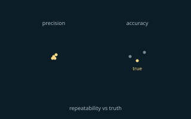
Precision vs accuracy
Precision is repeatability (spread of measurements). Accuracy is closeness to true value (bias). You can be precise but wrong, or noisy but unbiased on average—see surveying accuracy and RMSE.
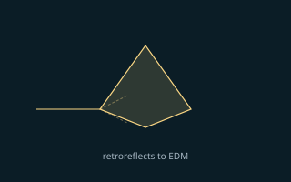
Prism
Retroreflective target for EDM/total station distance measurement.
R
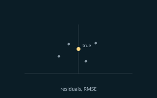
RMSE
Root mean square error—common statistic for comparing checkpoints to control.
RTK
Real-time kinematic—differential GNSS where corrections from a known base (or network RTK service) are applied in the field over radio, cellular, or IP so the rover can resolve integer ambiguities and hold centimeter-level fixes while moving. Best when you need immediate stakeout, live QC, or drone flights that require a fixed solution before capture; vulnerable to link loss, baseline length, and sky obstruction. See PPK vs RTK & networks.
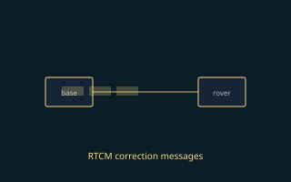
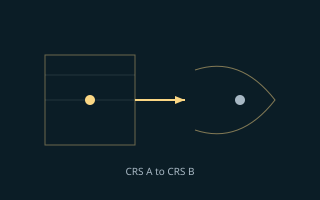
S
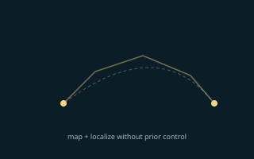
SLAM
Simultaneous localization and mapping—builds a map and tracks pose in it from sensors (often LiDAR or vision plus IMU), with loop closure to limit drift. Common in handheld scanners and some mobile mapping; see mobile mapping & SLAM.
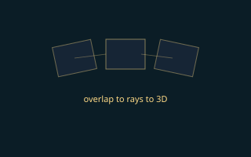
SfM
Structure from motion—recovering 3D geometry from overlapping images; core to many photogrammetry pipelines.
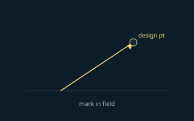
Stakeout
Marking design coordinates in the field for construction or utilities.
T
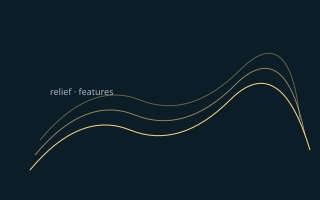
Topo (topographic)
Survey or map of terrain relief and surface features—often for design or permitting.
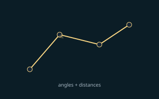
Traverse
Sequence of measured angles and distances connecting control points or boundaries.
V
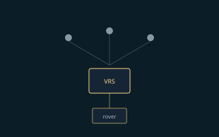
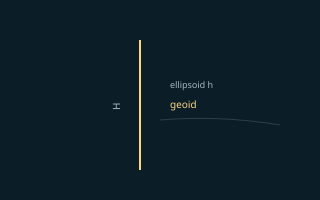
Vertical datum
Reference for elevations—orthometric (geoid-based) or ellipsoidal (GPS height).
W
Waypoint
Stored coordinate used for navigation, flight planning, or field routing.